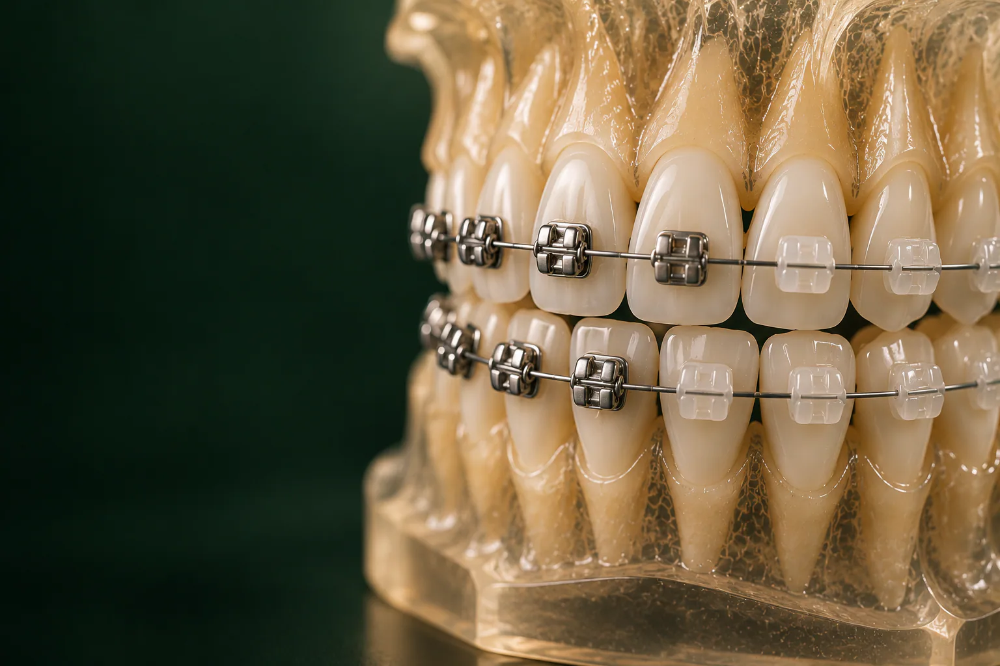

Металлическая лигатурная система 3M: от 28 500 ₽
Классический и доступный по цене вариант. Подходит тем, для кого главное: результат и бюджет, а заметность конструкции не так важна.

Брекеты в стоматологии «Умная Медицина» в пос. Удельная (Раменский округ): несъёмная система для выравнивания зубов и исправления прикуса у подростков и взрослых.
Имеются противопоказания. Необходима консультация специалиста.
Мы ставим металлические и керамические системы производства США: лигатурную 3M, от 28 500 ₽, самолигирующую Damon Q2, от 32 570 ₽, керамическую Damon Clear, от 50 500 ₽ за одну челюсть. Лечение ведёт врач-ортодонт Каштанова Екатерина Константиновна. Начните с консультации ортодонта за 1 700 ₽: врач осмотрит прикус, скажет, нужна ли вам конструкция и какая, и назовёт стоимость лечения до его начала.
Стоимость брекет-систем указана за одну челюсть. Если выравнивать нужно и верхний, и нижний зубной ряд, устанавливают две системы, и цена считается за каждую челюсть. Бывает, что коррекция нужна только на одной челюсти, тогда и оплачивается одна система. Перед установкой понадобятся снимки, во время лечения: профессиональная гигиена, после него, ретейнер или ретенционная каппа. Всё это врач включает в план, чтобы вы заранее видели полную сумму.
Цены «от»: минимальные, окончательная стоимость зависит от клинической ситуации. Цены актуальны на 18.10.2026. Все услуги и цены стоматологии: на странице цены.
Что входит в каждый этап и итоговую сумму, врач запишет в план лечения до начала работы.
Подробнее: на странице рассрочка и налоговый вычет.
Конструкция состоит из двух основных частей. На каждый зуб приклеивают небольшой замок: брекет. Через пазы всех замков проводят упругую металлическую дугу. Дуга стремится вернуть себе заданную форму и мягко, постоянно давит на зубы, а кость вокруг корней постепенно перестраивается: так зубы перемещаются в нужное положение. По ходу лечения врач проводит активации: меняет дугу на более жёсткую или корректирует её, чтобы движение продолжалось в правильном направлении.
Это универсальный метод: несъёмная система работает круглосуточно и не зависит от того, не забыли ли вы её надеть. Поэтому брекет-системы подходят для большинства нарушений прикуса, в том числе для выраженной скученности и сложных случаев, когда съёмные капы могут не справиться.
Ровные зубы, это не только эстетика. При неправильном прикусе жевательная нагрузка распределяется неравномерно: отдельные зубы стираются быстрее, страдает десна, может возникать напряжение в жевательных мышцах и височно-нижнечелюстном суставе. Скученные зубы сложнее чистить, поэтому между ними чаще появляются кариес и воспаление дёсен.
К ортодонту обращаются, если:
Нужно ли вам ортодонтическое лечение и какое, решает врач после осмотра и снимков. Иногда достаточно локальной коррекции нескольких зубов: для этого в клинике используют частичные брекет-системы. Если исправление прикуса: часть большого плана, его согласуют с ортопедом (протезирование) или хирургом-имплантологом (имплантация). Обо всех методах ортодонтии: в разделе исправление прикуса.
Брекет-системы различаются по двум признакам: из чего сделаны замки и как в них удерживается дуга.
В клинике работают с тремя системами производства США.
Классический и доступный по цене вариант. Подходит тем, для кого главное: результат и бюджет, а заметность конструкции не так важна.
Металлические замки с дверцей-клипсой вместо лигатур. Дуга свободнее скользит в пазах, а без колечек вокруг замков меньше мест, где задерживается налёт. Самолигирующие системы создавались, чтобы лечение было комфортнее, а визиты для активации: проще.
Прозрачные замки с тем же самолигирующим механизмом. Керамические замки выбирают взрослые, которым важно, чтобы конструкция была менее заметна на работе и в общении. Керамика требует бережного отношения: на твёрдой пище замок может отколоться, поэтому рекомендации по питанию особенно важны.
Какая система подойдёт, врач подскажет на консультации: с учётом прикуса, ваших пожеланий к внешнему виду и бюджета. Если вы рассматриваете съёмные прозрачные капы, сравните варианты на странице элайнеры: курс стоит от 215 000 ₽, но подходит не при всех нарушениях.
Срок зависит от вида и сложности нарушения, возраста, выбранной системы и от того, насколько аккуратно вы выполняете рекомендации: приходите на активации, бережёте замки, следите за гигиеной. Локальная коррекция нескольких зубов занимает меньше времени, сложные нарушения прикуса: больше. У взрослых лечение, как правило, длится дольше, чем у подростков, потому что кость перестраивается медленнее.
Сроки зависят от ситуации; точный график врач распишет в плане лечения после диагностики.
В первые дни после фиксации и после каждой активации зубы обычно ноют, жевать неприятно: это нормальная реакция на начало движения, она проходит сама. Щёки и губы привыкают к замкам: если что-то натирает, на замок накладывают ортодонтический воск, его выдаёт врач или можно купить в аптеке. Речь и ощущения во рту приходят в норму быстро.
Пока носите конструкцию, стоит отказаться от продуктов, которые отрывают замки и гнут дугу:
Окрашивающие напитки: крепкий чай, кофе, красное вино, могут окрашивать лигатуры, поэтому после них стоит прополоскать рот. Если врач назначил межчелюстные резинки, носите их по схеме и не пропускайте: от этого зависит, как сработает лечение.
Если замок отклеился или дуга начала колоть, не исправляйте её самостоятельно: запишитесь к ортодонту. Повторная фиксация одного брекета стоит от 1 200 ₽.
Замки и дуга задерживают налёт, и если чистить зубы как раньше, вокруг замков может появиться деминерализация эмали: белые пятна, и кариес. Поэтому уход нужен тщательнее обычного:
Раз в несколько месяцев проходите профессиональную гигиену. Чистка с брекет-системой методом Air Flow стоит 6 300 ₽: мелкодисперсный порошок под давлением убирает налёт вокруг замков и под дугой, не повреждая конструкцию. Как часто её проходить именно вам, подскажет врач. Подробнее: на странице профессиональная гигиена.
Систему снимают аккуратно, с использованием атравматичных методов, чтобы не повредить эмаль. Затем с зубов убирают остатки клея и полируют поверхность.
После активного лечения зубы ещё какое-то время стремятся вернуться в прежнее положение. Чтобы этого не произошло, назначают ретенционный этап, пропускать его нельзя:
Ретейнер стоит 11 000 ₽; итоговую сумму ретенции для вашего случая врач назовёт заранее. Часто эти способы сочетают. Какой вариант нужен и сколько его носить, решает врач. Подробнее: на странице ретейнеры.
Подросткам систему обычно ставят, когда сменились постоянные зубы. Рост челюстей ещё продолжается, и это помогает в лечении. Детям младшего возраста чаще назначают съёмные пластинки и расширяющие аппараты: о них на странице исправление прикуса.
Взрослым выравнивание зубов доступно и после 30, и после 40 лет: зубы перемещаются в любом возрасте, если здоровы дёсны и кость вокруг корней. Перед фиксацией важно вылечить кариес и воспаление дёсен, при необходимости: провести профгигиену. Для тех, кто стесняется металла, есть керамическая Damon Clear.
К нам приезжают пациенты из Удельной, Жуковского и соседних посёлков, а также из Люберец, Раменского и Балашихи: лечение длится долго, и удобная дорога на плановые визиты имеет значение.
Если до или после выравнивания нужна терапия, удаление зуба или протезирование, к лечению подключаются другие врачи клиники. Все специалисты: в разделе врачи.

Терапевт, ортодонт
Эстетическая реставрация и прикус
Записаться к врачуОтзывы о клинике и врачах: на ПроДокторов, Яндекс Картах и 2ГИС.
Да, возраст сам по себе не противопоказание: зубы перемещаются и у взрослых, если здоровы дёсны и кость. Лечение может занять больше времени, чем у подростка, а перед фиксацией нужно вылечить кариес и воспаление дёсен. Окончательное решение врач принимает после осмотра и снимков.
Металлическая лигатурная система 3M: от 28 500 ₽, металлическая самолигирующая Damon Q2, от 32 570 ₽ и керамическая самолигирующая Damon Clear, от 50 500 ₽, все цены за одну челюсть. Для локальной коррекции нескольких зубов используют частичные системы. Выбор зависит от прикуса, пожеланий к внешнему виду и бюджета.
Цена указана за одну челюсть: 3M, от 28 500 ₽, Damon Q2, от 32 570 ₽, Damon Clear, от 50 500 ₽; если брекеты нужны на обе челюсти, оплачиваются две системы. Отдельно оплачиваются консультация ортодонта (1 700 ₽), снимки, гигиена и ретенция. Полную сумму врач называет до начала лечения.
Сама фиксация обычно не вызывает боли: замки приклеивают к поверхности эмали, уколы и сверление для этого не нужны. Ноющее ощущение в зубах появляется в первые дни после установки и после активаций и проходит само. Если натирает щёку, помогает ортодонтический воск.
Фиксацию проводят за один визит, его длительность зависит от того, ставят систему на одну или на обе челюсти. Общий срок лечения зависит от сложности случая: ориентир врач назовёт после диагностики.
После каждого приёма пищи, ортодонтической щёткой с V-образным вырезом, вокруг замков, монопучковой щёткой, под дугой, ёршиками; дополнительно помогает ирригатор. Раз в несколько месяцев стоит проходить профессиональную гигиену с брекет-системой: 6 300 ₽.
Удерживающий этап нужен обязательно, иначе зубы могут постепенно сместиться обратно. Используют ретейнер (11 000 ₽), ретенционную каппу (для взрослых: от 7 500 ₽) или их сочетание. Схему и срок ношения определяет врач.
Сразу после снятия с эмали убирают остатки клея и полируют её. Первое время зубы могут быть чувствительнее обычного. Чтобы сохранить достигнутое положение, важно носить ретейнер или каппу так, как назначил врач, и продолжать тщательную гигиену.
Не пытайтесь исправить конструкцию сами. Закройте острый край ортодонтическим воском и запишитесь к ортодонту, повторная фиксация одного брекета стоит от 1 200 ₽.
Запишитесь на консультацию: план лечения с ценой по этапам
Имеются противопоказания. Необходима консультация специалиста.
Адрес клиники: Московская обл., Раменский округ, пос. Удельная, ул. Громова, 10/2. Клиника рядом с Жуковским; по соседству Малаховка, Быково, Ильинский, Родники, Островцы, Красково и Октябрьский. Пациенты приезжают и из Люберец, Раменского и Балашихи.
На машине: из Жуковского через Быково, без выезда в Москву. У клиники есть бесплатная парковка.
На МЦД-3: до станции Удельная, от неё пешком до клиники. Из Жуковского: от станции Отдых три остановки без пересадок (Ильинская, Быково, Удельная).
Визиты для активации проходят регулярно на протяжении всего лечения, поэтому клиника рядом с домом экономит время.
Подробнее о клинике: на странице стоматология в Удельной.
Имеются противопоказания. Необходима консультация специалиста.
пгт Удельная, Раменский округ, рядом с Жуковским.
Ежедневно с 9:00 до 21:00
+7 495 150-36-15К нам ездят из Жуковского, Раменского, Быкова, Ильинского, Красково, Малаховки, Островцов, Люберец и Балашихи.
Перезвоним за 5 минут, подберём врача и удобное время.
Оставьте номер, администратор перезвонит и ответит на вопросы.
Подойдёт КТ, панорама, прицельный снимок или фото плана лечения из другой клиники. Врач посмотрит и ответит в течение рабочего дня. Это бесплатно.
Хирург, ортопед и терапевт осмотрят вас вместе, сделаем КТ. Консультация бесплатная, если остаётесь на лечение. Стоимость лечения врач назовёт после осмотра.
Консультацию ведут вместе
 ХирургМихаил
ХирургМихаил ОртопедЕвгений
ОртопедЕвгений ТерапевтАртём
ТерапевтАртёмПервый визит 0 ₽, если остаётесь на лечение
Хирург, ортопед и терапевт посмотрят ваш случай вместе и предложат два-три варианта с ценой. Оставьте номер, администратор перезвонит и подберёт время.
Скидка 10% на лечение, если оплатить его в день консультации
Перезвоним за 5 минут, ежедневно с 9:00 до 21:00.